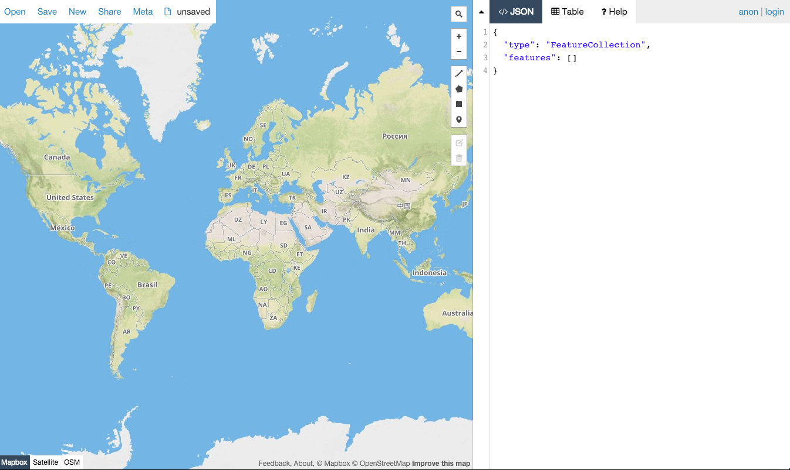

leaflet.draw
But first
Some caution
I write sloppy code
and it's mostly client side
and flat
Databases remind me of relationships:
too much commitment
it freaks me out
So this demo has some bad choices
There are some really bad hacky things in here
I learned some things
(especially about leaflet)
no one should actually write code like this.
But if you actually me
Or ask "why didn't you just"
I'll fucking kill you.
¯\_(ツ)_/¯
Anyway.
Leaflet.draw is a plugin for Leaflet.
The actual drawing function is an extension of L.Control
And it lets you draw stuff on a map.

geojson.io: the dumb parts
Cool OK but what about storing map data?
Enter dumb flat problem solving
and a detour to talk a little about filesaver.js
What about storing features?
This is where the serious poor choices happen
What do you need to map?
Are dumb geojsons useful?
THANK YOU